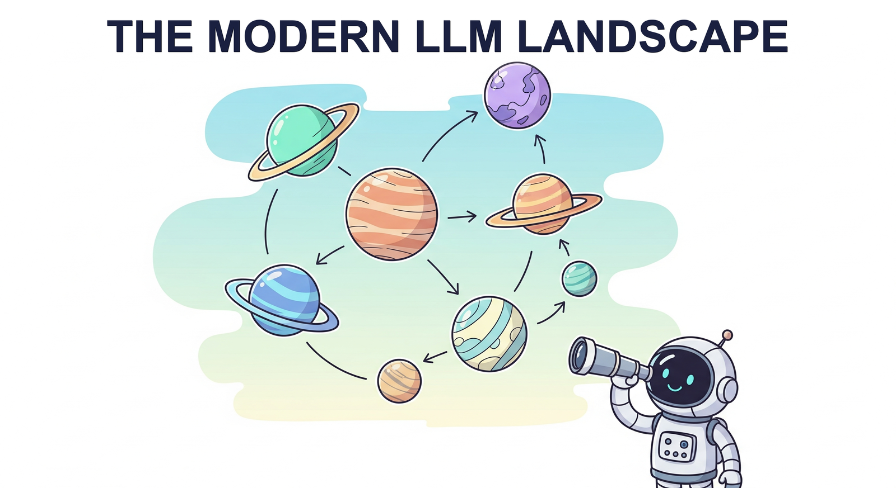

"The best way to predict the future is to invent it, but the second best way is to train a very large neural network on all of human text."
A Well-Benchmarked AI Agent

The large language model ecosystem has grown at a breathtaking pace. Closed-source frontier models from OpenAI, Anthropic, and Google push the boundaries of capability, while open-weight releases from Meta, DeepSeek, Mistral, Alibaba, and Microsoft have democratized access to powerful models that anyone can download, fine-tune, and deploy. Meanwhile, a new class of reasoning models has emerged, shifting compute from training time to inference time through extended chains of thought, process reward models, and tree search over candidate solutions.
This chapter surveys the current landscape across four complementary perspectives. We begin with the closed-source frontier (Section 7.1), examining the capabilities, pricing, and architectural hints available for GPT-4o, Claude, Gemini, and their competitors. Section 7.2 dives deep into open-source and open-weight models, with particular attention to architectural innovations like DeepSeek V3's Multi-head Latent Attention, FP8 training, and auxiliary-loss-free Mixture of Experts. Section 7.3 explores the paradigm shift toward reasoning models and test-time compute scaling. Finally, Section 7.4 addresses the multilingual and cross-cultural dimensions that determine whether these models serve a global audience or remain English-centric tools.
Who: Priya, a senior ML engineer at a healthcare analytics startup handling patient records.
Situation: The company needed an LLM to summarize physician notes for insurance pre-authorization, processing 50,000 notes per month.
Problem: GPT-4o delivered excellent summaries, but HIPAA compliance required that no patient data leave the company's private cloud.
Dilemma: Use a frontier API with a BAA (Business Associate Agreement) and accept vendor lock-in, or deploy an open-weight model on-premises with potentially lower quality?
Decision: The team fine-tuned Llama 3 70B on 2,000 de-identified note/summary pairs and deployed it on their own GPU cluster.
How: They used QLoRA to keep fine-tuning costs under $400 in compute, then ran vLLM on four A100 GPUs behind their existing VPN.
Result: The fine-tuned open model matched GPT-4o quality on their internal eval suite (92% vs. 94% physician approval rate) at roughly 60% lower per-note cost, with full data sovereignty.
Lesson: Open-weight models are not just a budget fallback. When domain-specific fine-tuning and data privacy matter, they can match frontier APIs on targeted tasks while giving you complete control over the deployment.
The LLM landscape changes so fast that by the time you finish reading this chapter, at least two new models will have been released, one of them claiming to be "state-of-the-art." Think of it as trying to photograph a cheetah mid-sprint: you will get a slightly blurry picture, but you can still tell which direction it is running.
Who: Marcus, a data science lead at an EdTech company building an AI math tutor for high school students.
Situation: The original product used GPT-4 to generate step-by-step solutions, but it hallucinated incorrect intermediate steps in roughly 18% of algebra problems.
Problem: Students trusted the AI's work, so even a small error rate led to frustrated parents and cancellation spikes.
Dilemma: Switching to a reasoning model (o1) would improve accuracy but triple the per-query latency and double the API cost.
Decision: Marcus implemented a two-tier system: a fast model for simple problems (detected by a lightweight classifier), and o1 for multi-step problems where chain-of-thought verification mattered. (For more on alignment techniques behind these models, see Module 16.)
How: A small logistic regression classifier (trained on 5,000 labeled problems) routed queries by estimated difficulty. Only 30% of problems hit the expensive reasoning model.
Result: Incorrect-step rate dropped from 18% to under 3%, overall API costs increased by only 40% (not 200%), and median latency stayed below 4 seconds.
Lesson: Reasoning models are powerful, but the smartest deployment strategy is often selective: route only the hard problems to the expensive model and handle routine queries with something faster and cheaper.
Who: Sofia, an NLP engineer at a global customer-support platform serving clients in 14 languages.
Situation: The platform used a single English-centric LLM with prompt-based translation, but quality in Thai, Arabic, and Swahili was poor enough that human agents had to rewrite 40% of responses.
Problem: Deploying a separate fine-tuned model per language was operationally and financially impractical.
Dilemma: Use a multilingual frontier API (expensive at scale) or find an open multilingual model that could handle all 14 languages adequately?
Decision: The team evaluated Qwen 2.5 72B and Aya Expanse, ultimately choosing Qwen for its strong coverage of their target languages, and fine-tuned it on 500 curated examples per language from their existing ticket logs.
How: They used LoRA adapters with language-specific routing, sharing one base model but activating the appropriate adapter based on detected input language.
Result: Human rewrite rates dropped to 12% across all languages, and the single-model deployment cost 70% less than the per-language alternative they had originally budgeted.
Lesson: Modern multilingual open-weight models, combined with lightweight per-language adapters, can serve a global audience without requiring a separate model for every locale.
Picking an LLM in 2025 feels a lot like choosing a restaurant in a city you have never visited: the menu descriptions all sound incredible, the online reviews contradict each other, and by the time you sit down, three new places have opened across the street. The trick is knowing what you are hungry for before you start reading menus.
In the next section, Section 7.1: Closed-Source Frontier Models, we survey the closed-source frontier models from OpenAI, Anthropic, Google, and others that define the state of the art.
Touvron, H., et al. "Llama 2: Open Foundation and Fine-Tuned Chat Models." (2023). arXiv:2307.09288
The paper that launched Meta's open-weight LLM family, detailing pretraining, RLHF alignment, and safety evaluations.
DeepSeek-AI. "DeepSeek-V3 Technical Report." (2024). arXiv:2412.19437
Describes Multi-head Latent Attention, FP8 mixed-precision training, and auxiliary-loss-free load balancing for Mixture of Experts.
Jiang, A.Q., et al. "Mixtral of Experts." (2024). arXiv:2401.04088
Introduces the sparse Mixture of Experts architecture behind Mixtral, showing how expert routing achieves strong performance at lower compute cost.
OpenAI. "GPT-4 Technical Report." (2023). arXiv:2303.08774
OpenAI's report on GPT-4 capabilities, covering multimodal inputs, safety mitigations, and benchmark performance across professional exams.
DeepSeek-AI. "DeepSeek-R1: Incentivizing Reasoning Capability in LLMs via Reinforcement Learning." (2025). arXiv:2501.12948
Demonstrates how reinforcement learning can elicit extended chain-of-thought reasoning in open-weight models.
Team, Gemini, et al. "Gemini: A Family of Highly Capable Multimodal Models." (2024). arXiv:2312.11805
Google's multimodal model family, covering native image, audio, and video understanding alongside text.
Zhao, W.X., et al. "A Survey of Large Language Models." (2023). arXiv:2303.18223
A comprehensive survey covering pretraining, alignment, evaluation, and applications of LLMs across the full landscape.
Ustun, A., et al. "Aya Model: An Instruction Finetuned Open-Access Multilingual Language Model." (2024). arXiv:2402.07827
Covers the Aya multilingual model trained on 101 languages, with discussion of cross-lingual transfer and cultural bias.
Snell, C., et al. "Scaling LLM Test-Time Compute Optimally can be More Effective than Scaling Model Parameters." (2024). arXiv:2408.03314
Formalizes the tradeoff between train-time and test-time compute, showing when inference scaling is preferable to larger models.
Hugging Face Model Hub. huggingface.co/models
The central repository for discovering, downloading, and deploying open-weight models, with over 500,000 model cards.
Hugging Face Open LLM Leaderboard. huggingface.co/spaces/open-llm-leaderboard
Community-maintained benchmark comparison of open-weight models across reasoning, knowledge, and coding tasks.
Ollama. github.com/ollama/ollama
A lightweight tool for running open-weight LLMs locally on consumer hardware with a simple CLI interface.
vLLM: Easy, Fast, and Cheap LLM Serving. github.com/vllm-project/vllm
High-throughput serving engine with PagedAttention, used widely for deploying open-weight models in production.